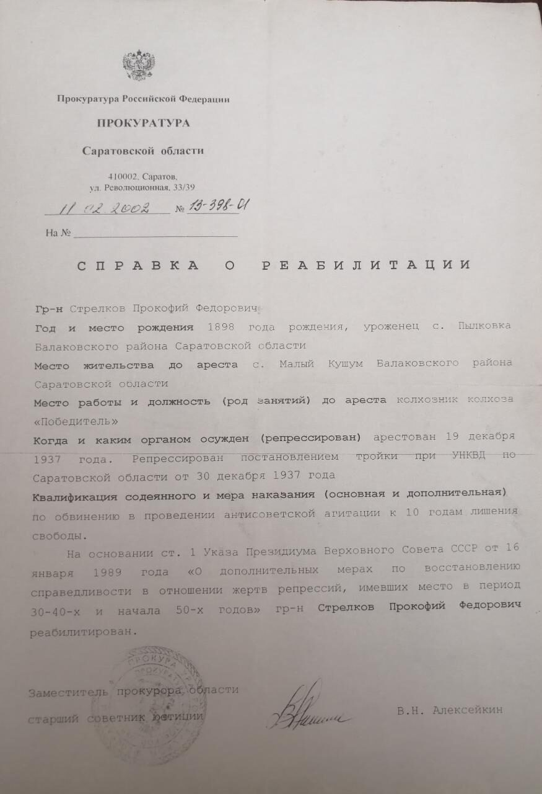

Мой дед был репрессирован и находился в заключении 10 лет – «от звонка до звонка». Когда мы были детьми в разговорах родителей и родственников тема репрессий при нас почти не упоминалась. Наверное, старались обходить эту тему, поэтому и мы особого интереса к ней не проявляли. Серьёзно тему репрессий я воспринял, когда меня принимали в коммунистическую партию. На заседании бюро райкома, во время собеседования, а это происходило летом 1982 года, один из присутствующих спросил: — Вот по фамилии и месту рождения, а не внук ли ты Прокофия Федоровича, сына у него зовут Николай, и твое отчество подходит. Я утвердительно кивнул головой. Наверное, все основные вопросы, которые обычно задавали на заседании бюро райкома партии при приеме, были исчерпаны, то последовал рассказ о том, как они вместе с моим дедом, в злопамятном 1937 году, были осуждены «оперативной тройкой» НКВД к каторге, но выжили и вернулись.
Прошли годы, многих безвинно репрессированных реабилитировали, выдали документ (фото) и льготы. (см какие) Льготами пользовался и мой папа Николай Прокофьевич. В свою очередь справка о реабилитации деда стала началом моего документального генеалогического поиска.

>